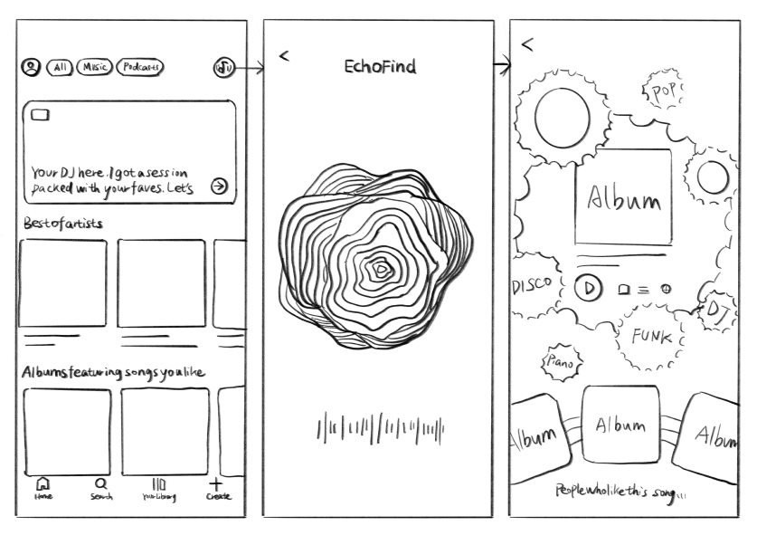
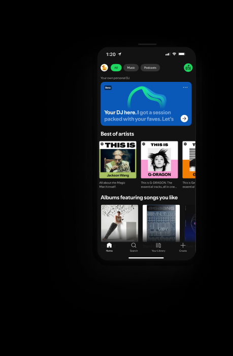
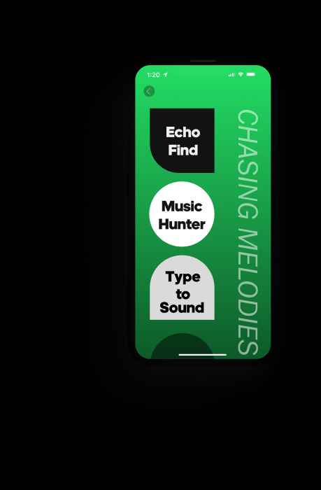
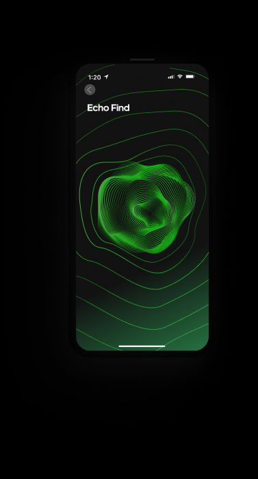
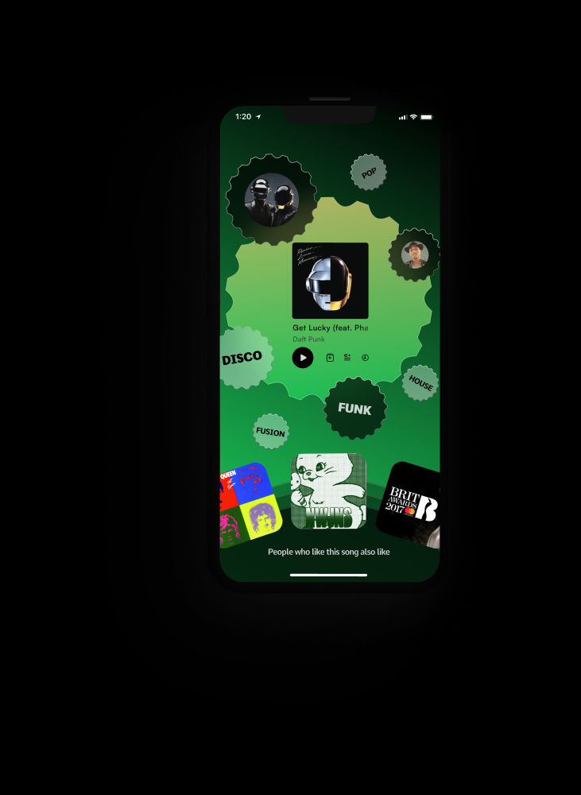
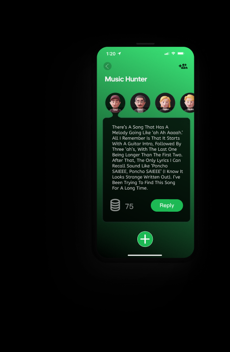
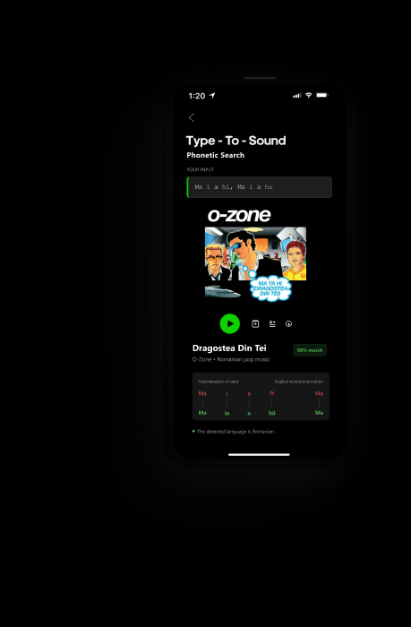
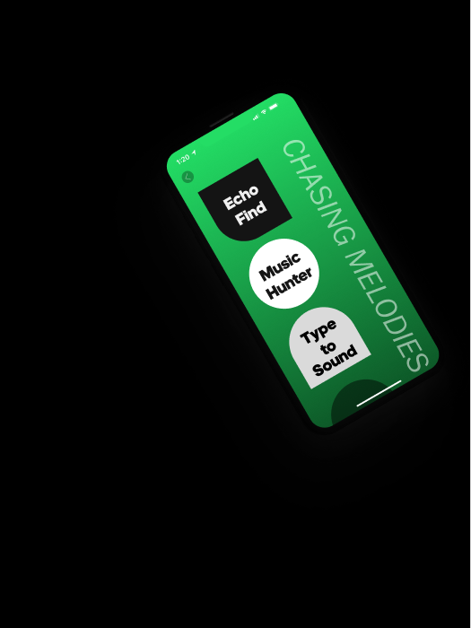
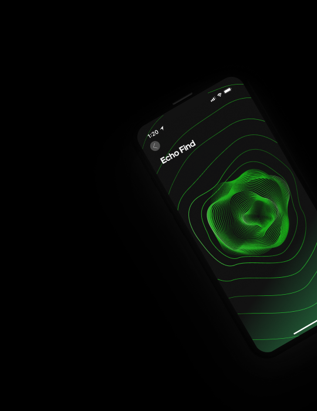
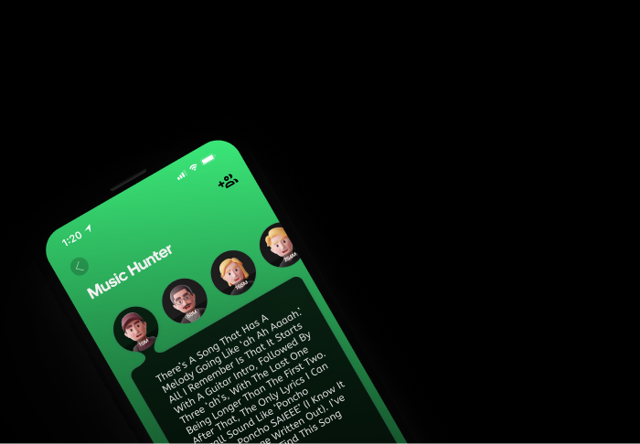

UX Case Study
Spotify Optimization
Randomly Listen to Interested Content
This project aims to combine AI with Spotify to create a more intuitive song‑identification experience by analyzing both users’ implicit and explicit signals. Our goal is to help users naturally recognize and capture songs they encounter in everyday moments, even when they don’t know the song’s name, artist, or language. By integrating AI recognition with behavioral insights and user‑provided cues, the system enables smoother discovery from vague memories or ambient audio to accurate matches and deeper musical understanding.
User Analysis & Pain Points
User Motivations
- ●Find favorite songs easily.
- ●Access a comprehensive music library.
- ●Friendly user experience.
- ●Personalized recommendations & discovering new music.
The Problem
The song search is not precise, especially with language barriers.
“When I search for Thai songs in Chinese, most of the results are Japanese songs.”
“I can’t find the song if I don’t know the singer… I can’t type Korean, French, or Thai.”
Core Question →
How Might We
“How might we help users seamlessly identify and capture songs they hear in everyday moments, even when they don’t know the song’s name, artist, or even the language?”
User Journey Maps
1. The Standard Flow
1
New User Registers
Selects favorite Artists/Podcasts.
→
2
Homepage Recommendations
System generates personalized content.
→
3
Interaction
Like, Don’t Play Again, Swipe to Skip.
→
4
Optimization
Algorithm refines taste precisely.
2. The “Accidental” Flow (Pain Point)
1
Immerse Craving
Accidentally hear a song you like very much.
→
2
Attempt Search
Search by conditions (Language/Era/Genre) or Lyrics.
→
3
Failure
“I don’t know the title or artist.” “I can’t type the language.”
→
4
Outcome
Low efficiency. Poor experience. You miss a good song.
Optimization Ideas
Bridging the gap between hearing a melody and adding it to your library.
Humming Search
By humming the tune, play the original song to obtain song information immediately.
Genre Education
Interactive features that help users understand which genre their preferred songs belong to.
AI Melody Match
Using AI to identify song content and automatically match similar songs you have heard.
Image Recognition
Scan an album cover or poster to instantly identify the album and artist.
Hear
User hears a Thai song at a cafe but doesn’t know the language.
→
Capture
User opens Spotipy and hums the melody or records a snippet.
→
Identify
AI identifies the song despite language barriers.
→
Connect
Song added to library. System recommends similar Thai Pop.
Lofi
We first created the lo‑fi design, and now we’re planning to add a prominent entry point on the desktop interface so that listeners can quickly and effortlessly access it.

Homepage
Quickly guide users to three music‑search categories through the home page buttons.


Echo Find
Echo Find is designed for listeners who want to quickly identify a song they’re currently hearing. Using AI recognition, it captures the user’s explicit signal to locate musically similar segments and find the matching track. Once the song is identified, Echo Find provides genre and artist insights based on the track’s attributes and past listeners’ implicit signals, helping users better understand their own musical preferences. It also uses these implicit signals to recommend similar songs, creating a more personalized discovery experience.


Music Hunter
On the Music Hunter page, when users want to find a song but only remember vague details, they can submit the clues they recall and post a request, allowing other users to help identify the track.

Type - To - Sound
Type‑To‑Sound is designed for situations where a user is listening to a foreign song or can’t clearly understand the lyrics. The user can type out what they think the lyrics sound like, and the AI compares the input against its phonetic database to surface songs with similar pronunciations. It then shows the user which part of the song the matched lyric comes from, along with the language of the original lyrics.




© 2025 Spotipy Optimization Project. Concept Design.